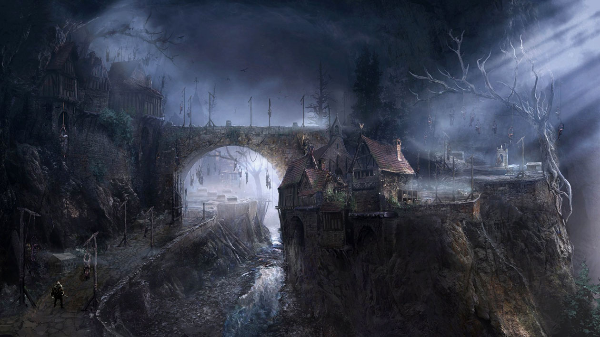
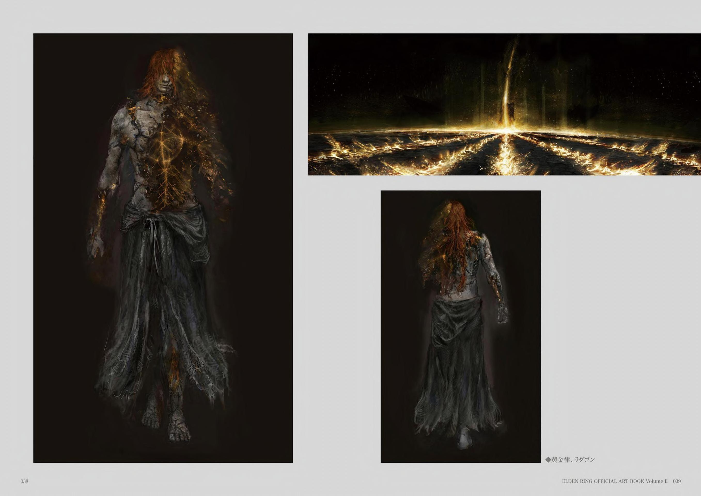

To best define concept art, we must first approach the idea with a broadened perspective. Concept art itself is an all-encompassing field, meaning that almost any major art form can be loosely defined as concept art. One might say a sketch of a person’s face is the concept of a portrait, the notations on a director’s sheet music are the concept of a soundtrack, or that a play script is the concept of a film.
Despite the wide variety of opportunities for concept art—such as advertisements, website and interface design, and product development—the two most widely appealing career paths fall into major entertainment media: film (including animation and television shows) and video game development. Within these industries, the two most recognized specializations are character concept art and environment concept art.
Concept art is not limited to any specific medium. Artists often create multiple concepts of the same subject using different tools, including physical drawings, digital paintings, or even 3D renderings.
This flexibility allows concept artists to choose mediums that best suit the project’s needs or the phase of development.
Environment concept artists design landscapes and settings that support storytelling by reflecting culture, architecture, and environmental conditions. Their work sets the tone, conveys mood, and provides context for the story, often using details like weather or time of day to enhance believability. By focusing on authenticity and narrative alignment, these artists create immersive worlds that feel alive and meaningful.
 "Village of the Albinaurics" from the 2022 video game Elden Ring.Character concept artists design characters that fit seamlessly into a story and its world. They consider factors like culture, personality, backstory, and purpose within the narrative, using visual cues to convey these elements. Their designs bring characters to life, ensuring they resonate with audiences and enhance the story.
 Art of "Radagon" from the 2022 video game Elden Ring.